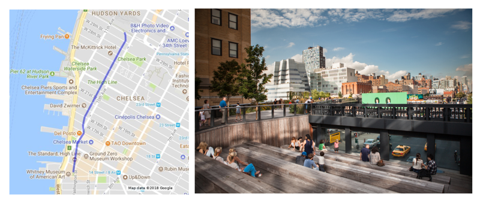
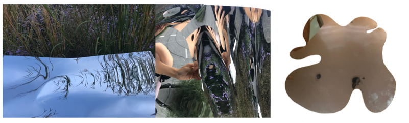
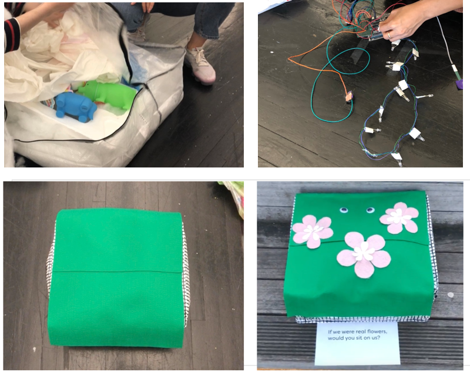
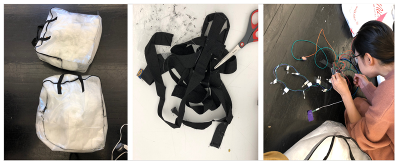

Instruct Site to Strangers
Cushions for Strangers at the High Line
Team with Yoon and FiFi
Location
The place we choose is High Line park. High Line park is a place with a combination of natural elements, industrial heritage and New York City street views. Urban Theatre is a place for visitors to sit and have a rest. It’s structure likes a theatre and in the front is a big glasses that can see the street view under it.

First Prototype - Puddle Shaped Mirrors

Feedback from First Prototype
- Many designers, artists are already using mirror.
- Scale has to be big to make an impact
- Lack of interaction
- Focus on the location ‘urban theatre’ and changed to cushions
Second Prototype

Feedback from Second Prototype
- The signifier didn’t show its affordance.
Try to make the cushion more like a cushion. Adjust size, color, comfort, availability and cleaness.
- Draw more attention.
Add sound/light effects.
- Quantity.
- Words are repelling.
Final Prototype

Feedback
- The wire in it makes people think it is not a cushion.
- It’s not for sitting, maybe just for placing the toys.
- It’s an art installation.
- It’s someone’s belongings.